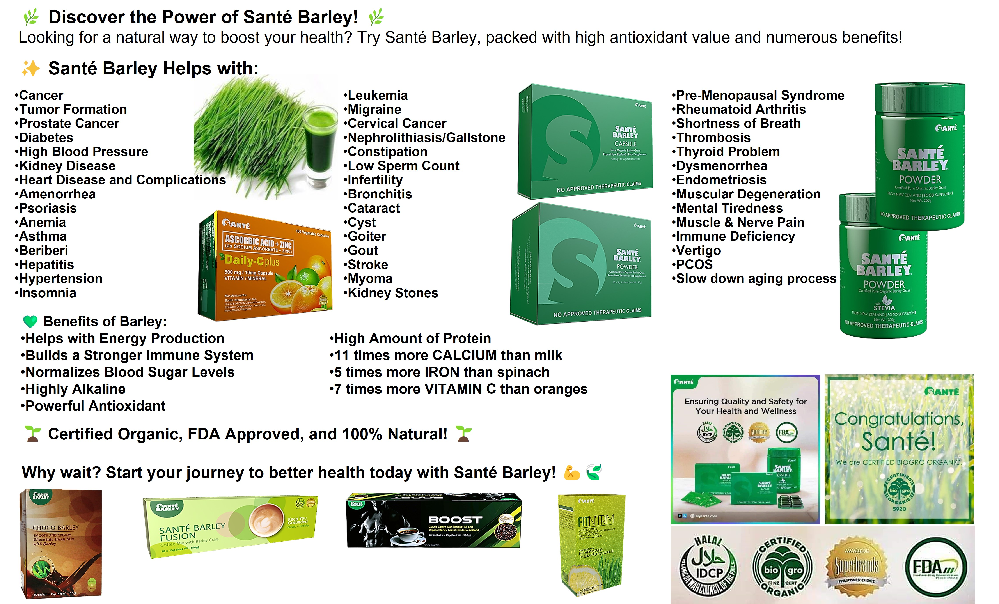

Welcome to our blog! Today, we’re excited to share with you the top 10 reasons why Sante Barley should be a staple in your diet. This superfood is packed with nutrients that can transform your health and well-being.
Sante Barley is rich in vitamin C, which strengthens the immune system and helps fight off infections.
The high fiber content aids in digestion, promotes a healthy gut, and prevents constipation.
Chlorophyll in Sante Barley acts as a natural detoxifier, cleansing the blood and liver.
With its rich nutrient profile, Sante Barley provides a natural energy boost without the crash associated with caffeine or sugar.
Regular consumption of Sante Barley can reduce cholesterol levels and improve cardiovascular health.
The fiber content helps manage blood sugar levels, making it beneficial for people with diabetes.
By promoting a feeling of fullness, Sante Barley can help control appetite and support weight loss efforts.
Sante Barley is packed with antioxidants that protect the body from free radicals and reduce the risk of chronic diseases.
The nutrients in Sante Barley can help reduce inflammation in the body, which is linked to many chronic diseases.
The vitamins and minerals in Sante Barley promote healthy, glowing skin by providing essential nutrients and antioxidants.

Incorporating Sante Barley into your diet is simple and versatile. You can mix it with water or juice, add it to smoothies, or even include it in your baking recipes. Start your journey to better health today by making Sante Barley a daily habit.